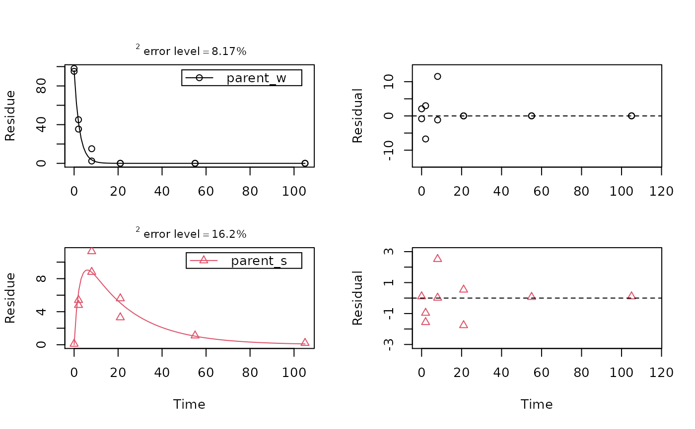
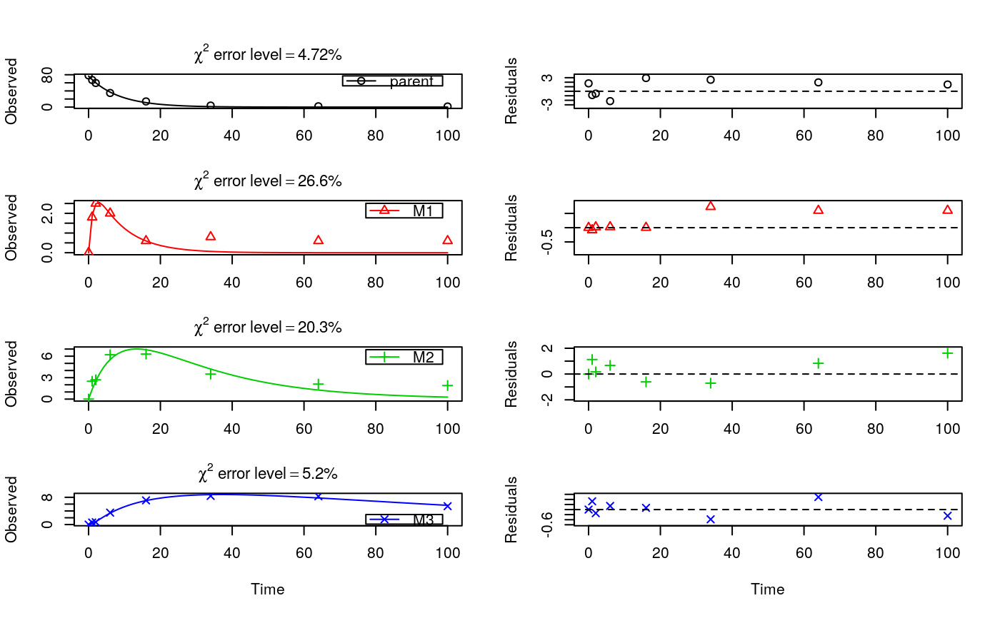

test_data_from_UBA_2014.RdThe datasets were used for the comparative validation of several kinetic evaluation software packages (Ranke, 2014).
test_data_from_UBA_2014
A list containing three datasets as an R6 class defined by mkinds.
Each dataset has, among others, the following components
titleThe name of the dataset, e.g. UBA_2014_WS_river
dataA data frame with the data in the form expected by mkinfit
Ranke (2014) Prüfung und Validierung von Modellierungssoftware als Alternative zu ModelMaker 4.0, Umweltbundesamt Projektnummer 27452
# This is a level P-II evaluation of the dataset according to the FOCUS kinetics # guidance. Due to the strong correlation of the parameter estimates, the # covariance matrix is not returned. Note that level P-II evaluations are # generally considered deprecated due to the frequent occurrence of such # large parameter correlations, among other reasons (e.g. the adequacy of the # model). m_ws <- mkinmod(parent_w = mkinsub("SFO", "parent_s"), parent_s = mkinsub("SFO", "parent_w"))#>#> Warning: Observations with value of zero were removed from the dataplot_sep(f_river)#> Estimate se_notrans t value Pr(>t) #> parent_w_0 9.598567e+01 2.12352039 4.520120e+01 9.476357e-18 #> k_parent_w_sink 3.603743e-01 0.03149366 1.144276e+01 4.128096e-09 #> k_parent_w_parent_s 6.031371e-02 0.01603582 3.761185e+00 9.436293e-04 #> k_parent_s_sink 7.560341e-11 0.09483761 7.971881e-10 5.000000e-01 #> k_parent_s_parent_w 7.419672e-02 0.10738374 6.909493e-01 2.500756e-01 #> sigma 2.982879e+00 0.50546582 5.901247e+00 1.454824e-05 #> Lower Upper #> parent_w_0 91.48420501 100.4871438 #> k_parent_w_sink 0.30668904 0.4234571 #> k_parent_w_parent_s 0.03423904 0.1062455 #> k_parent_s_sink 0.00000000 Inf #> k_parent_s_parent_w 0.02289956 0.2404043 #> sigma 2.00184022 3.9639169mkinerrmin(f_river)#> err.min n.optim df #> All data 0.09246946 5 6 #> parent_w 0.06377096 3 3 #> parent_s 0.20882325 2 3# This is the evaluation used for the validation of software packages # in the expertise from 2014 m_soil <- mkinmod(parent = mkinsub("SFO", c("M1", "M2")), M1 = mkinsub("SFO", "M3"), M2 = mkinsub("SFO", "M3"), M3 = mkinsub("SFO"), use_of_ff = "max")#>#> Warning: Observations with value of zero were removed from the data#> Estimate se_notrans t value Pr(>t) Lower #> parent_0 76.55425583 0.859186612 89.1008482 1.113866e-26 74.755959748 #> k_parent 0.12081956 0.004601921 26.2541551 1.077372e-16 0.111561582 #> k_M1 0.84258650 0.806231456 1.0450926 1.545475e-01 0.113839804 #> k_M2 0.04210878 0.017083049 2.4649452 1.170195e-02 0.018013807 #> k_M3 0.01122919 0.007245890 1.5497322 6.885127e-02 0.002909463 #> f_parent_to_M1 0.32240199 0.240803564 1.3388589 9.820820e-02 NA #> f_parent_to_M2 0.16099854 0.033691991 4.7785403 6.531225e-05 NA #> f_M1_to_M3 0.27921500 0.269443517 1.0362654 1.565440e-01 0.022992933 #> f_M2_to_M3 0.55641333 0.595125466 0.9349513 1.807725e-01 0.008003317 #> sigma 1.14005399 0.149696423 7.6157731 1.727024e-07 0.826735778 #> Upper #> parent_0 78.35255192 #> k_parent 0.13084582 #> k_M1 6.23641283 #> k_M2 0.09843279 #> k_M3 0.04333950 #> f_parent_to_M1 NA #> f_parent_to_M2 NA #> f_M1_to_M3 0.86443084 #> f_M2_to_M3 0.99489847 #> sigma 1.45337221mkinerrmin(f_soil)#> err.min n.optim df #> All data 0.09649963 9 20 #> parent 0.04721283 2 6 #> M1 0.26551209 2 5 #> M2 0.20327575 2 5 #> M3 0.05196549 3 4